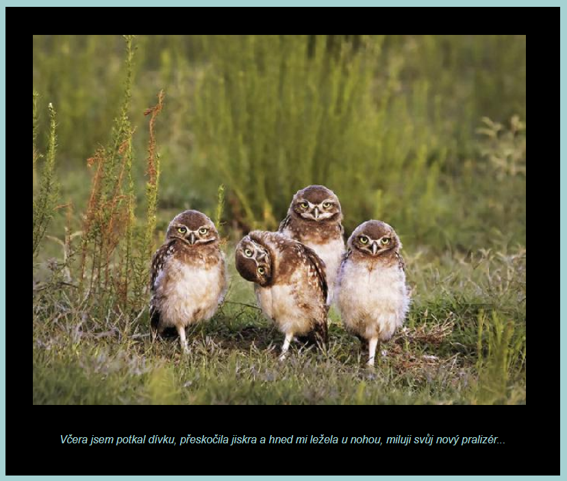

Úkol 02 - Meme generátor
Domácí úkol
Cílem domácího úkolu je vytvořit jednoduchou webovou aplikaci, která bude generovat obrázky s texty, a nasadit ji na váš Tomcat.cloud
Popis:
Cílem je udělat webovou aplikaci, která bude při obnovení stránky generovat náhodný obrázek, na kterém bude napsaný náhodně vybraný text. K žádnému obrázku nebude text daný pevně - budou se náhodně vybírat a budou tak vznikat různé kombinace.
Jak bude web vypadat, necháme na vás. Ukázkový web můžete vidět na https://margot.tomcat.cloud/ukol02/

Nepovinný bonus:
Vylepšete nějak Meme generátor. Například tak (ale fantazii se meze nekladou), že se zobrazí 3 náhodné výroky a 3 náhodné obrázky. Zaručte, že se nikdy nebudou žádné dva výroky ani obrázky opakovat. Příklad si opět můžete vzít z dema: https://margot.tomcat.cloud/ukol02/pro-lepsi-naladu.html. V případě, že se rozhodnete udělat nepovinný bonus, nahrejte na Tomcat.cloud jen tento bonus a základní Meme generátor není třeba vystavovat.
Pár tipů:
-
Vyjděte ze šablony projektu z hodiny (Czechitas Java Web App Template). Složku si prostě okopírujte a otevřete ji v IntelliJ IDEA. Po otevření je nutné přejmenovat tato místa, kde je jméno a adresa aplikace uvedena v konfiguračních souborech:
- PROJEKT/src/main/resources/application.properties -> server.context-path = /ukol02
- PROJEKT/pom.xml -> /project/groupId = cz.czechitas.java2
- PROJEKT/pom.xml -> /project/artifactId = ukol02
- PROJEKT/pom.xml -> /project/name = Meme Generator
- PROJEKT/pom.xml -> /project/build/finalName = ukol02
- Archív .war vytvoříte v pravém panelu Maven Projects -> Lifecycle -> clean a potom Maven Projects -> Lifecycle -> package.
- Pozor! Mezi zdrojovým projektem (složkou) a výsledným webovým archívem .war je velký rozdíl. Do Tomcatu se nasazuje výsledný archív .war, do odevzdávárny na Google Drivu se nahrává zazipovaná složka celého projektu.
- Do Tomcatu se NIKDY nekopíruje rozbalená složka webu, pouze archív .war. Tomcat si tento archív sám rozbalí.
- Pokud se chcete zbavit nasazené webové aplikace z Tomcatu a máte ho spuštěný, smažte pouze archív .war ve složce TOMCAT/webapps. Nemažte rozbalenou složku webu. Tomcat sám pozná, že jste odebrali zdrojový archív .war a rozbalenou složku smaže sám. To slouží zároveň jako potvrzení, že byla webová aplikace úspěšně sesazena. Pouze pokud byste měly Tomcat zastavený, smažte i rozbalenou složku v TOMCAT/webapps.
- Pro psaní doporučuji používat javový projekt se zabudovaným malým Tomcatem, který spustíte klasicky pomocí zelené šipky. Adresa vašeho webu je potom http://localhost:8080/ukol02. Případně místo /ukol02 to, co jste uvedly v application.properties -> server.context-path. V tomto případě stačí pouze editovat zdrojové soubory webu a obnovovat stránku v prohlížeči.
- Pro zajímavost, jméno výsledného archívu .war se nastavuje v PROJEKT/pom.xml -> /project/build/finalName
Odevzdání domácího úkolu
Domácí úkol (celou složku s projektem, ne jen výsledný webový archív .war!)
zabalte pomocí 7-Zipu pod jménem Ukol02-Vase_Jmeno.7z.
(Případně lze použít prostý zip, například na Macu).
Takto vytvořený archív nahrajte na
Google Drive
do složky Ukol02.
Takto vytvořený archív .war (ukol02.war) nasaďte do vašeho lokálního Tomcatu (JAVA-TRAINING/Tomcat/webapps) a vyzkoušejte, že funguje ( http://localhost:8080/ukol02/ ).
Po odladění nasaďte tento archív ještě přes FTP na server Tomcat.cloud ( http://sladkost.tomcat.cloud/ukol02/ ).
Vytvořte snímek obrazovky spuštěného programu a pochlubte se s ním ve fotoalbu Ukol02 na Facebooku.
Pokud byste chtěli odevzdat revizi úkolu (např. po opravě),
zabalte ji a nahrajte ji na stejný Google Drive znovu,
jen tentokrát se jménem Ukol02-Vase_Jmeno-verze2.7z
Termín odevzdání je do úterý 13. 3. 2018 23:59. Pokud úkol nebo revizi odevzdáte později, prosím pošlete email nebo zprávu přes FB svému opravujícímu kouči. Pokud nevíte, kdo to je, pošlete zprávu oběma (Lucce Popelové i Karolíně Malé).